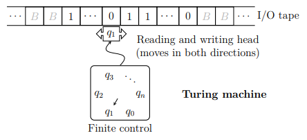
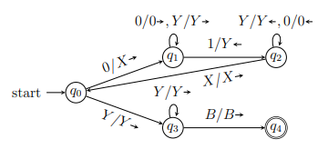
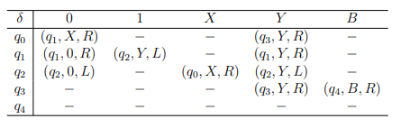
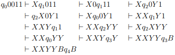
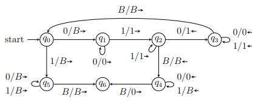
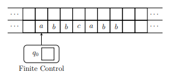
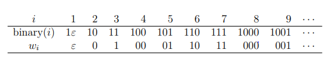
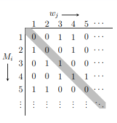

图灵机

定义：图灵机（TM，Turing Machine）M为七元组
- $Q$：有穷状态集
- $\Sigma$：有穷输入符号集
- $\Gamma$：有穷带符号集，且总有$\Sigma \subset \Gamma$
- $\delta$：$Q \times \Gamma \to Q \times \Gamma \times \lbrace L,R \rbrace$转移函数
- $q_0 \in Q$：初始状态
- $B \in \Gamma - \Sigma$：空格符号
- $F \subseteq Q$：终态集或接受状态集
例1：设计识别$\lbrace 0^n 1^n \vert n \geq 1 \rbrace$的图灵机

续例1：设计识别$\lbrace 0^n 1^n \vert n \geq 1 \rbrace$的图灵机
$M = (\lbrace q_0,q_1,q_2,q_3,q_4 \rbrace, \lbrace 0,1 \rbrace,\lbrace 0,1,X,Y,B \rbrace, \delta, q_0, B, \lbrace q_4 \rbrace)$

定义：图灵机虽然有无穷长的串，但是经过有限步，带上非空内容总是有限的，因此用全部非空符号，当前状态及带头位置，定义图灵机的瞬时描述（ID）为：
- 图灵机的状态$q$
- 带头在左起第$i$个非空格符$X_i$上
- $X_1 X_2 \dots X_n$是最左到最右非空格内容
转移符号定义：图灵机$M$中，如果$\delta(q,X_i) = (p,Y,L)$，定义$ID$转移为
如果$\delta(q,X_i)=(p,Y,R)$，那么
若某$ID$是从另一个经有限步（包括0步）转移而得到的，记为$\vdash_{M}^{\ast}$，若$M$已知，简记为$\vdash$和$\vdash^{\ast}$
续例1：设计识别$\lbrace 0^n 1^n \vert n \geq 1 \rbrace$的图灵机，接受0011的ID序列

语言与停机
定义：如果$M=(Q,\Sigma,\Gamma,\delta,q_0,B,F)$是一个图灵机，则$M$接受的语言为
定义：如果$L$是图灵机$M$的语言，即$L=\boldsymbol{L}(M)$，则称$L$是递归可枚举语言
- 一般假定，当输入串被接受时，图灵机总会停机
- 然而，对于不接受的输入，图灵机可能永远不会停止
定义：对接受和不接受的输入，都保证停机的图灵机，所接受的语言称为递归语言。
算法的形式化
保证停机的图灵机，正是算法的好模型，即算法概念的形式化。
整数函数计算器
- 例如，将整数$i \geq 0$表示字符串$0^i$
- 若计算$k$个自变量$i_1,i_2,\dots,i_k$的函数$f$，用作为TM $M$的输入
- 当$M$停机且输入带上为$0^m$，表示计算
例2：设计整数真减法(-)的图灵机

图灵机的变形
状态中存储
有限状态控制器中可以存储多个有限符号的图灵机
其中$Q^{\prime} = Q \times \Gamma \times \dots \times \Gamma, \ q_0^{\prime} = [q_0,B,\dots,B]$
多道
多道图灵机：
其中$\Gamma^{\prime} = \Gamma \times \Gamma \times \dots \times \Gamma$
例子3：利用状态中存储与多道设计TM识别$L=\lbrace wcw \vert w \in \lbrace a,b \rbrace^{\ast} \rbrace$

半无穷带图灵机
图灵机的输入输出带只有一侧是无穷的
定理39
半无穷带图灵机，与图灵机等价
多带图灵机
有穷控制器，$k$个带头和$k$条带组成，每个动作，根据状态和每个带头符号：
- 改变控制器中的状态
- 修改带头单元格中的符号
- 每个带头独立的向左或右移动一个格，或保持不动
开始时，输入在第一条带上，其他都是空的
定理40
由多带图灵机接受的语言$L$，可被单带图灵机接受
证明：
- 用$2k$道的单带图灵机$D$模拟$k$带图灵机$M$
- $D$用两道模拟$M$一带，一道放置内容，一道标记带头
- 为模拟$M$的一个动作，$D$需要从左至右，再从右至左，各扫描一次
- 第一次扫描收集各个带头处符号，第二次更新带头符号和位置
图灵机的运行时间
定义
图灵机$M$在输入$w$上的运行时间，为停机前移动的步数
定义
图灵机$M$在所有长度为$n$的输入上，运行时间关于$n$的最大值函数$T(n)$，称为$M$的时间复杂度
- 只有保证停机的图灵机，其时间复杂度$T(n)$才有意义
- 但是，只有多项式把时间的$T(n)$，才是计算机上实际可解的
定理41
单带图灵机$D$模拟$k$带图灵机$M$的$n$步移动，需要使用$O(n^2)$的时间
证明：
- $M$移动$n$步，带头相距不会超过$2m$
- 而标记带头并调转方向至多需要$2k$
- 因此$D$模拟$M$的1步至多需要$4n+2k$步，即$O(n)$时间
- 因此模拟$n$步需要$O(n^2)$时间
非确定图灵机（NTM）
图灵机在每组状态$q$和带符号$X$的转移$\delta(q,X)$，可以有有限个选择：
- NTM接受语言的方式与NFA和PDA是类似的
- 存在从初始ID到某接受状态$ID$的转移，其他选择可以忽略
定理42：如果$L$被非确定图灵机接受，那么$L$被图灵机接受
证明：
- TM $M$用控制器保存并用两条带模拟NTM $N$的动作：第1条带存储$N$未处理的$ID$，第2条带模拟$N$的带
- $M$将第1条带最前端的$ID$复制到第2带，若接受则停止
- 将当前$ID$可能的$k$个转移$ID$复制到第1条带的最末端
- 将第1带上最前端的ID抹掉，从第2步重复
证明（续）
- 只有$N$进入接受的$ID$时，$M$才会且一定会接受
- 因为若$N$每步最多$m$个选择，那么从初始$ID$经过$n$步最先可到的$ID$数量为 而$M$会“先广搜索”这些最多$nm^n$个的$ID$
TM与NTM
- NTM的$n$步计算，TM需要指数倍的时间$O(m^n)$模拟，但是否必然呢？——任是未知的
- NTM以多项式时间解决的问题，TM是否也能以多项式时间解决呢？
不可判定性
不可判定问题
定义：一个问题，如果他的语言是递归的，称为可判定问题，否则称为不可判定问题，否则称为不可判定问题。
- 递归可枚举语言 —— 图灵机所识别的语言
- 递归语言 —— 保证停机的图灵机所识别的语言
判定问题
“图灵机$M$接受输入$w$吗？”
第$i$个串
定义：将全部$(\boldsymbol{0}+ \boldsymbol{1})^{\ast}$中的字符串按照长度和字典序排序，那么第$i$个串就是$w_i$，而且刚好有
即：

图灵机编码
将$\Sigma = \lbrace 0,1 \rbrace$上的任意图灵机$M$，用二进制字符串编码
- $Q=\lbrace q1,q_2,\dots,q{\vert Q \vert} \rbrace$，开始状态$q_1$，终态为$q_2$且停机
- $\Gamma = \lbrace X1,X_2,\dots,X{\vert \Gamma \vert} \rbrace$，总有$X_1=0,X_2=1,X_3=B$
- 设带头移动方向$D_1=L,\ D_2=R$
- 任意的转移$\delta(q_i,X_j)=(q_k,X_l,D_m)$编码为
- 则全部$n$个转移的编码合并在一起，作为图灵机$M$的编码
第$i$个图灵机$M_i$
定义：当图灵机$M$的编码为$w_i$时，则称其为第$i$个图灵机$M_i$
- 那么，任意图灵机$M$，都对应于一个字符串$w$
- 而任意字符串$w$，也都可以看作是一个图灵机$M$
- 当$w$的编码不合法时，则将其看作仅仅接受$\emptyset$且立即停机的图灵机
非递归可枚举的语言
定义：对角化语言$L_{d}=\lbrace w_i \vert w_i \not\in \boldsymbol{L}(M_i),i \geq 1 \rbrace$

定理44：对角化语言$L_d$不是递归可枚举的
证明：假设存在识别$L_d$的图灵机$M$，那么$M$也可被编码，不妨设它是第$i$个图灵机$M_i=M$，即$\boldsymbol{L}(M_i)=L_d$，那么，考虑第$i$个串$w_i$是否会被$M_i$识别：
- 如果$w_i \in \boldsymbol{L}(M_i) = L_d$，那么由$L_d$的定义，有$w_i \not\in \boldsymbol{L}(M_i)$
- 如果$w_i \in \boldsymbol{L}(M_i)$，那么由$L_d$的定义，又有$w_i \in L_d = \boldsymbol{L}(M_i)$
无论如何都会矛盾，因此假设不成立，不存在接受$L_d$的图灵机。
递归可枚举但非递归的语言
定义：图灵机$M$和输入串$w$组成的有序对$(M,w)$可编码为
定义：通用语言$L_u = \lbrace M111w \vert w \in \boldsymbol{L}(M) \rbrace$
定理47：通用语言$L_u$不是递归的
证明：假设存在算法$A$识别$L_u$，则可构造识别$L_d$的算法$B$，将$B$的输入$w=w_i$转换为$M_u111w_i$交给$A$判断
- 当$A$接受，表示$w_i \in \boldsymbol{L}(M_i)$，则$B$拒绝
- 当$A$拒绝，表示$w_i \in \boldsymbol{L}(M_i)$，则$B$接受
由于$L_d$不是递归的，所以$B$不可能存在，所以$L_u$不可能是递归的。
定理48：通过语言$L_u$是可枚举的
证明：构造图灵机$U$，当输入$M111w$时，用3条带模拟$M$处理串$w$的过程
- 第1带装载$M$的编码
- 第2带模拟$M$的带，放置串$w$
- 第3带存储$M$的状态
通用图灵机
定义：可以模拟任意图灵机$M$的图灵机$U$，称为通用图灵机
- 冯、诺伊曼通用电子计算机体系结构设计思想的灵感来源
- 抽象理论的先期发展，可以对实际问题有很大帮助
罗杰·彭罗斯在《皇帝新脑》中以另一种编码给出了 $U = Mi$ 的 $i$ 为:724485533533931757719839503961571123795236067255655963110814479660650505940424109031048361363235936564444345838222688327876762655614469281411771501784255170755408565768975334635694247848859704693472573998858228382779529468346052106116983594593879188554632644092552550582055598945189071653741489603309675302043155362503498452983232065158304766414213070881932971723415105698026273468642992183817215733348282307345371342147505974034518437235959309064002432107734217885149276079759763441512307958639635449226915947965461471134570014504816733756217257346452273105448298078496512698878896456976090663420447798902191443793283001949357096392170390483327088259620130177372720271862591991442827543742235135567513408422229988937441053430547104436869587640517812801943753081387063994277282315642528923751456544389905278079324114482614235728619311833261065612275553181020751108533763380603108236167504563585216421486954234718742643754442879006248582709124042207653875426445413345174856629157429990950262300973373813772416217274772361020678685400289356608569682262014198248621698902609130940298570600174300670086896759034473417412787425581201549366393899690581773859165405535670409282133222163141097871081459978669599704509681841906299443656015145490488092208448003482249207730403043188429899393135266882349662101947161910701461968523192847482034495897709553561107027581748733327296678998798473284098190764851272631001740166787363477605857245036964434897992034489997455662402937487668839751404451665707750060513883991668814072545544665222050724262392379211525318162512536305931728631422004064571305275802307665183351995689139748137504926429605010013651980186945639498